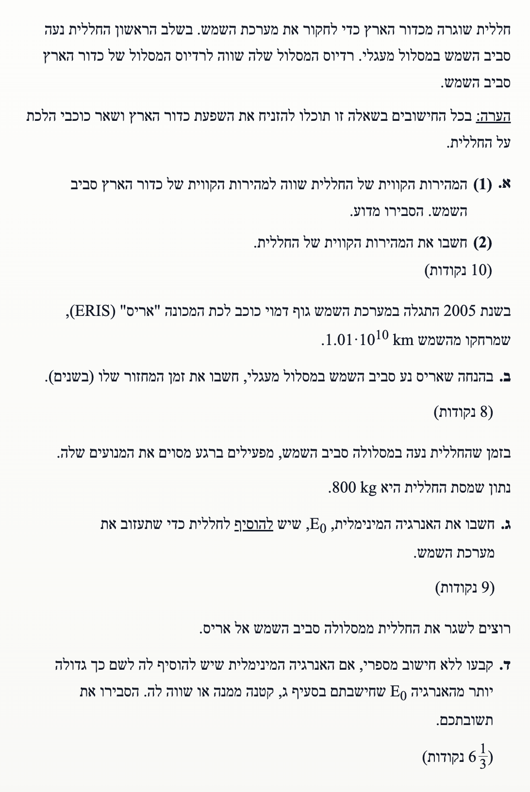
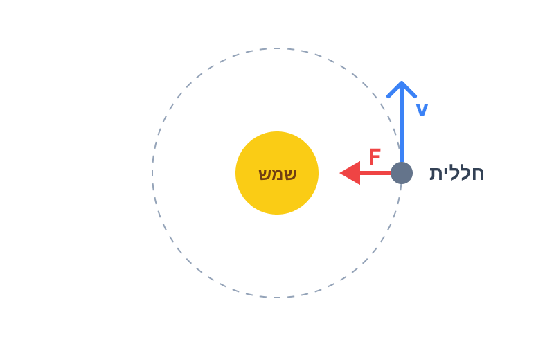
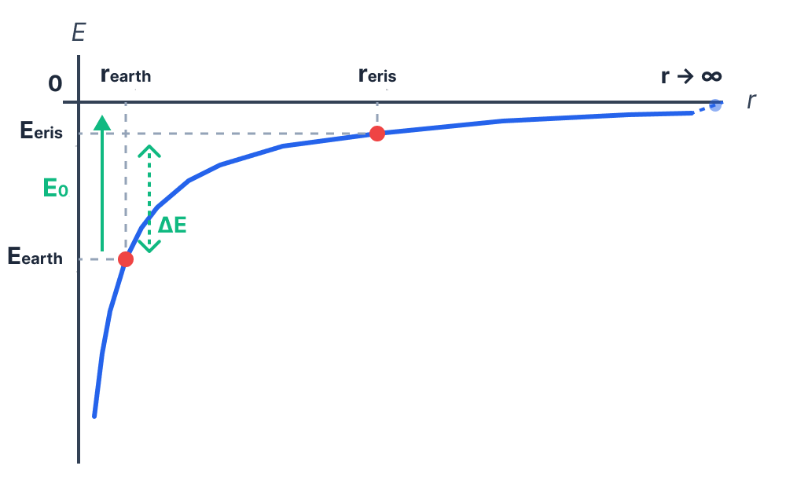

אסטרופיזיקה, תנועה מעגלית של לוויינים, אנרגיה וחוקי קפלר.

החללית מוצבת במסלול סביב השמש שרדיוסו שווה לרדיוס המסלול של כדור הארץ סביב השמש. מתוך דף הנוסחאות נחלץ את הנתונים הקבועים (לאחר המרה ליחידות MKS התקניות):
בחלק הראשון (1) אנו נדרשים לקבוע ולהסביר האם המהירות הקווית של החללית שווה למהירות הקווית של כדור הארץ. בחלק השני (2) אנו נדרשים לחשב את גודל המהירות הזו.
כדי לתאר את תנועת החללית (וכדור הארץ), נשתמש בחוק השני של ניוטון לתנועה מעגלית \(\Sigma\vec{F} = m\vec{a}_R\), כאשר הכוח המרכזי הפועל הוא כוח הכבידה \(F = G\frac{M_1 M_2}{r^2}\) והתאוצה הרדיאלית היא \(a_R = \frac{v^2}{r}\).
נתחיל בשרטוט תרשים כוחות (FBD) עבור החללית במסלולה סביב השמש:

נרשום את משוואת הכוחות עבור גוף המקיף את השמש במסה \(m\) (יכול להיות החללית או כדור הארץ):
נצמצם את מסת הגוף המקיף \(m\) ואת הרדיוס \(r\) במכנה, ונקבל את הביטוי למהירות הקווית:
כפי שניתן לראות מהמשוואה, מהירות ההקפה \(v\) תלויה רק במסת השמש המרכזית \(M_s\) וברדיוס המסלול \(r\). מכיוון שגם החללית וגם כדור הארץ מקיפים את השמש באותו הרדיוס בדיוק, מהירותם הקווית חייבת להיות שווה, ללא תלות במסתם השונה. ולכן, המהירויות שוות.
נציב את הערכים המספריים כדי לחשב את גודל המהירות:
נעגל את התוצאה ל-3 ספרות מהותיות כנדרש:
כוכב הלכת הננסי "אריס" נמצא במסלול מעגלי שרדיוסו נתון לנו בקילומטרים. עלינו להמיר זאת למטרים כדי לשמור על עקביות. בנוסף, נזכור את נתוני כדור הארץ שיהוו את הבסיס להשוואה:
אנו מחפשים את זמן המחזור של אריס סביב השמש, המסומן ב-\(T_{eris}\), ביחידות של שנים.
נשתמש בחוק השלישי של קפלר המאפשר להשוות בין שני גופים המקיפים את אותו הגוף המרכזי. הנוסחה כפי שמופיעה בדף הנוסחאות היא \(\left(\frac{T_1}{T_2}\right)^2 = \left(\frac{r_1}{r_2}\right)^3\).
נחשב תחילה את היחס בין הרדיוסים. שימו לב שהיחידות במטרים מצטמצמות:
כעת נציב את נתוני אריס כגוף מספר 1 ואת נתוני כדור הארץ כגוף מספר 2 במשוואה של קפלר. נציב את יחס הרדיוסים שמצאנו ישירות לתוך המשוואה (בחזקת 3):
נחשב את אגף ימין:
נוציא שורש ריבועי כדי למצוא את זמן המחזור:
לאחר עיגול ל-3 ספרות מהותיות, נקבל:
החללית נעה במסלולה המעגלי ברדיוס כדור הארץ, וברגע מסוים מפעילה מנועים. הנתונים:
אנו נדרשים לחשב את האנרגיה המינימלית \(E_0\) שיש להוסיף לחללית כדי שתעזוב את מערכת השמש לחלוטין (הגעה לאינסוף עם אפס מהירות).
נשתמש בנוסחה לאנרגיה הכוללת של לוויין במסלול מעגלי המופיעה בדף הנוסחאות: \(E = -\frac{GMm}{2r}\). כמו כן, נשתמש בעיקרון עבודה ואנרגיה: עבודת הכוחות החיצוניים (המנועים) שווה לשינוי באנרגיה המכנית הכוללת \(W = \Delta E = E_f - E_i\).
תחילה, נגדיר את מצבי האנרגיה של החללית. המצב ההתחלתי (i) הוא מסלול מעגלי ברדיוס \(r_E\). האנרגיה הכוללת במצב זה היא שלילית, כיוון שמדובר במערכת קשורה:
המצב הסופי הנדרש (f) הוא הגעה לאינסוף, שם האנרגיה הפוטנציאלית מתאפסת (\(U = 0\)). כיוון שאנו מחפשים את האנרגיה המינימלית, נדרוש שהחללית תגיע לאינסוף בדיוק עם מהירות אפס (\(E_k = 0\)). לכן, האנרגיה הכוללת הסופית היא:
האנרגיה המינימלית שיש להוסיף, \(E_0\), שווה לעבודה הנדרשת כדי לעבור ממצב i למצב f:
כעת נציב את הערכים המספריים לתוך המשוואה:
נעגל ל-3 ספרות מהותיות כפי שנדרש:
כעת משנים את המשימה. במקום לברוח ממערכת השמש, רוצים לשגר את החללית ממסלולה הנוכחי סביב השמש אל המסלול של כוכב הלכת הננסי אריס.
עלינו לקבוע, ללא חישוב מספרי, האם האנרגיה המינימלית שיש להוסיף כדי להגיע לאריס תהיה גדולה, קטנה או שווה לאנרגיה \(E_0\) שחישבנו בסעיף ג', ולנמק את תשובתנו.
העיקרון המוביל כאן הוא הבנת מדרג האנרגיה הפוטנציאלית הכובדית \(U_G = -\frac{GMm}{r}\). ככל שהמרחק \(r\) קטן מאינסוף, האנרגיה הפוטנציאלית (ולכן האנרגיה הכוללת במצב מנוחה) קטנה מאפס.
בסעיף ג' מצאנו ש-\(E_0\) היא כמות האנרגיה המדויקת הנדרשת כדי להביא את האנרגיה הכוללת של החללית ממינוס לאפס. הגעה לאפס אנרגיה כוללת משמעותה הגעה לאינסוף עם מהירות אפס (התנתקות מוחלטת מכוח המשיכה של השמש).
כאשר המטרה היא להגיע לאריס, אנו שואפים להביא את החללית למרחק סופי מסוים מן השמש (\(r_{eris}\)). במרחק זה, האנרגיה הפוטנציאלית של החללית היא עדיין שלילית (\(U = -\frac{G M_s m}{r_{eris}} < 0\)).
לכן, גם אם החללית תגיע למסלול של אריס עם מהירות אפס (הדרישה המינימלית ביותר), האנרגיה הכוללת שלה תהיה קטנה מאפס. מכיוון שהאנרגיה הכוללת הסופית במשימת אריס נמוכה יותר מהאנרגיה הכוללת הסופית במשימת הבריחה לאינסוף (שהיא אפס), הרי שכמות האנרגיה שיש להוסיף בנקודת ההתחלה כדי להגיע ליעד חייבת להיות קטנה יותר.
כפי שניתן לראות בבירור בגרף האנרגיה להלן:
